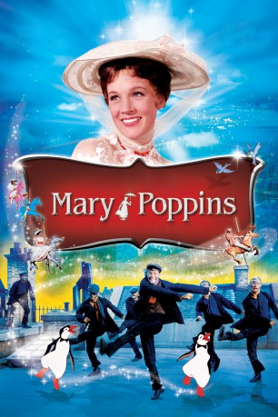
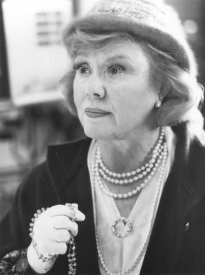
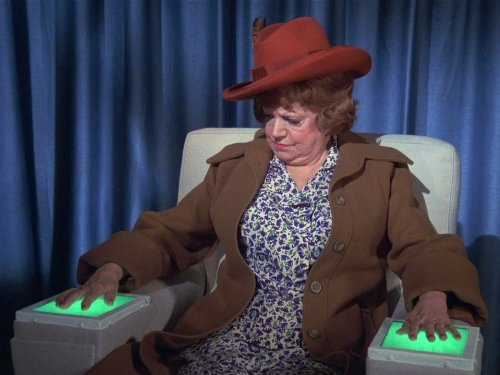
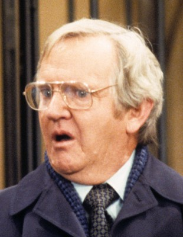
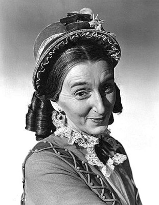
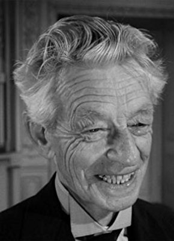
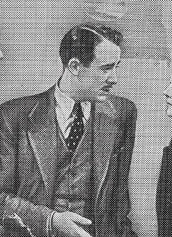

#3109 Mary Poppins
Auszeichnungen: 5 Oscars gewonnen für 8 Oscars nominiert 1 GoldenGlobes gewonnen 1 BAFTA-Awards gewonnen
 
 IMDB-Wertung: 7.8 / 10
IMDB-Wertung: 7.8 / 10  Metascore: 88
Metascore: 88 
London, 1910: Das Leben der Banks-Kinder Jane und Michael nimmt eine Wende, als ihr neues Kindermädchen Mary Poppins mit einem Regenschirm buchstäblich vom Himmel herabschwebt. Dank ihrer wundersamen Kräfte schmeckt plötzlich die Medizin, machen sonst lästige Spaziergänge Spaß, tanzen Kaminkehrer auf dem Dach und haben die Eltern - im Gegensatz zu früher - immer gute Laune. Als der Westwind kommt, verabschiedet sich Mary Poppins jedoch wieder, worüber nicht nur die Familie, sondern die ganze Straße traurig ist.
Jahr: 1964
Dauer: 139 Minuten
FSK: 6
Land: USA Studio: Buena Vista Distribution Co., Inc.Tonspuren: DD5.1 - ,
Untertitel: Deutsch,
Auflösung: 1080p (1792x1080) Größe: 11161 MB
Genre: Komödie, Fantasy, Familie, Musical
Regisseur: Robert Stevenson
Drehbuch: Bill Walsh, Don DaGradi, P.L. Travers
Soundtrack: Irwin Kostal
Darsteller:
 Julie Andrews als Mary Poppins
Julie Andrews als Mary Poppins Dick Van Dyke als Bert / Mr. Dawes Senior
Dick Van Dyke als Bert / Mr. Dawes Senior- David Tomlinson als Mr. Banks
-  Glynis Johns als Mrs. Banks
-  Hermione Baddeley als The Domestic
- Reta Shaw als The Domestic
- Karen Dotrice als Jane Banks
- Elsa Lanchester als Katie Nanna
- Reginald Owen als Admiral Boom
 Ed Wynn als Uncle Albert
Ed Wynn als Uncle Albert Jane Darwell als The Bird Woman
Jane Darwell als The Bird Woman-  Arthur Malet als Mr. Dawes Junior
- Art Bucaro als Chimney Sweep , uncredited
- Daws Butler als Turtle / Penguin , uncredited
 Dal McKennon als Fox / Hunting Horse / Reporter #1 / Carousel Guard / Penguin / Hound , uncredited
Dal McKennon als Fox / Hunting Horse / Reporter #1 / Carousel Guard / Penguin / Hound , uncredited Alan Napier als Huntsman / Reporter #3 / Hound , uncredited
Alan Napier als Huntsman / Reporter #3 / Hound , uncredited Marni Nixon als Geese , uncredited
Marni Nixon als Geese , uncredited J. Pat O'Malley als Pearly Drummer / Master of Hounds / Huntsman / Hound / Horse / Penguin / Reporter #2 / Photographer , uncredited
J. Pat O'Malley als Pearly Drummer / Master of Hounds / Huntsman / Hound / Horse / Penguin / Reporter #2 / Photographer , uncredited- Richard M. Sherman als Penguin / Pearly , uncredited
- Ginny Tyler als Lambs , uncredited
- Matthew Garber als Michael Banks
- Arthur Treacher als The Constable
 James Logan als Bank Doorman
James Logan als Bank Doorman Don Barclay als Mr. Binnacle - Admiral's Servant
Don Barclay als Mr. Binnacle - Admiral's Servant- Alma Lawton als Mrs. Corry - Old Woman in Park
-  Marjorie Eaton als Miss Persimmon - Old Woman in Park
 Marjorie Bennett als Miss Lark - Old Woman in Park
Marjorie Bennett als Miss Lark - Old Woman in Park- Walter Bacon als Citizen , uncredited
- Frank Baker als Bearded Gentleman in Bank , uncredited
- Robert Banas als Chimney Sweep , uncredited
- Marc Breaux als Cow , uncredited
-  Cyril Delevanti als Mr. Grubbs , uncredited
 George DeNormand als White-haired Man Walking Quickly Through Park , uncredited
George DeNormand als White-haired Man Walking Quickly Through Park , uncredited- Harvey Evans als Chimney Sweep Dancer , uncredited
 Paul Frees als Barnyard Horse , uncredited
Paul Frees als Barnyard Horse , uncredited- Betty Lou Gerson als Old Crone , uncredited
- Clive Halliday als Mr. Mousley , uncredited
- Sam Harris als Citizen , uncredited
- Bill Lee als Ram , uncredited
 Queenie Leonard als Lady in the Bank , uncredited
Queenie Leonard als Lady in the Bank , uncredited Doris Lloyd als Depositor , uncredited
Doris Lloyd als Depositor , uncredited- Junius Matthews als Fox , uncredited
-  Lester Matthews als Mr. Tomes , uncredited
 Sean McClory als Hound / Reporter #4 , uncredited
Sean McClory als Hound / Reporter #4 , uncredited- Hans Moebus als Citizen , uncredited
- King Mojave als Bank Clerk , uncredited
- George Pelling als Hound / Reporter #5 , uncredited
- Thurl Ravenscroft als Hog / Andrew's Whimper , uncredited
 Bert Stevens als Top-Hatted Man in Bank , uncredited
Bert Stevens als Top-Hatted Man in Bank , uncredited- Hal Taggart als Bank Clerk Near Safe , uncredited
Datei: X:\2-Dilogie(G-M)\Mary Poppins\Mary Poppins (1964, FSK6, 1792x1080).mkv seit 28.01.2016
Festplatte: HD Collection-2(A-Z)-3(A-M)
 Alle Filme aus Gruppe '2-Dilogie(G-M)\Mary Poppins'
Alle Filme aus Gruppe '2-Dilogie(G-M)\Mary Poppins'